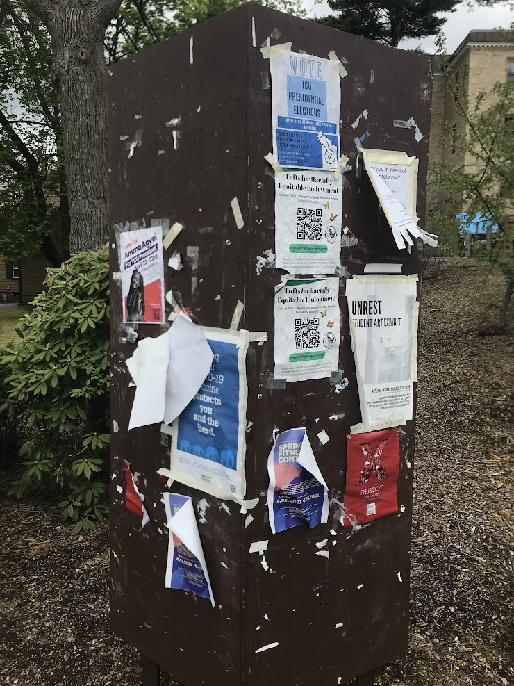

Based on general facts about living on the Tufts campus in Spring 2021. Contains questions about Tufts Dining, Academic Life, Campus Geography, and COVID Policies.
1. You want to use ONLY 1 lunch meal swipe. The total cost of the items in your cart should not exceed...
2. You're out of meal swipes and are feeling especially narcissistic. Where can you easily steal someone else's order?
3. Which of the following is/are (a) sushi option(s) served at Tufts? Select all that apply.
4. You vaguely remember that there is a Cafe inside Tisch Library that hasn't been open for almost an entire year at this point. What was it called again?
5. You've heard decent things about breakfast food from Commons. When is it open for breakfast?
6. What is the platform where most virtual Tufts classes are held?
7. An exception to the residency requirement was established for students who studied at Tufts in Fall of 2020. Students who completed the Fall 2020 semester at Tufts now only have to complete _____ full time semesters to be eligible for graduation.
8. A grade of an A+ corresponds to what GPA?
9. Which of the following is/are (an) exam time(s) according to the Tufts Exam Block schedule? Select all that apply.
10. All of the following are dates this semester that we did not have classes EXCEPT...
11. Which of the following is located the closest to the Gantcher Center?
12. The Pearson Chemistry building is located _____; Bromfield-Pearson is located _____.
13. Each bike that is part of the Tufts Bike Share is stored in one of two bike racks. One of them is outside Tisch Library. Where is the other one?
14. Select all of the following that are true statements.
15. What is on the other side of the street of the announcements board shown in the picture below?
In other words, if you look at this board from this angle, then turn your head 180 degrees, what would you be looking at now?
16. The COVID-19 test used at Tufts involves swabbing the inside of one's...
17. The Mods are temporary buildings built over...
18. If one is in need of more masks and/or sanitizing wipes during the semester, where is one to go to pick it up?
19. Wearing a face mask is required in which of the following scenarios? Select all that apply.
20. If you test positive for COVID-19, the period of isolation is...